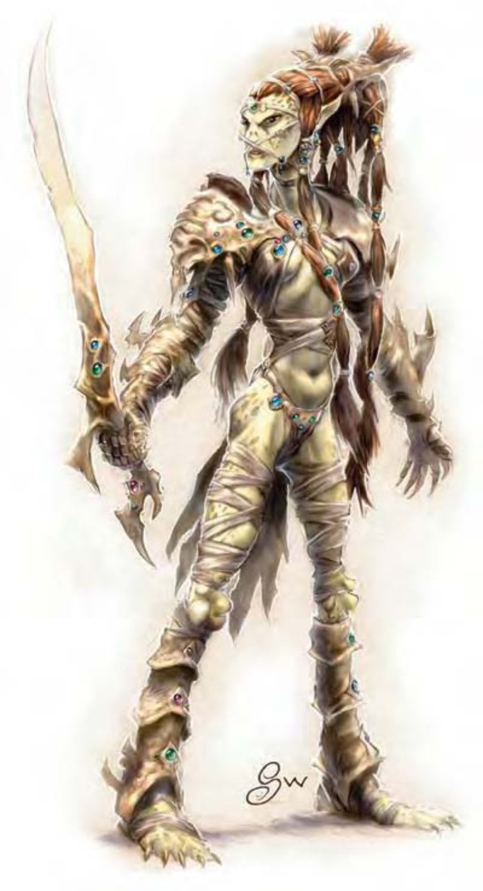

| 资料栏位 | 吉斯扬基、1级武者 中型人形生物 (外界) |
| 生命骰 | 1d8+2 (6HP) |
| 先攻 | +1 |
| 速度 | 穿着胸甲时20英尺 (4格)；基本速度30英尺 |
| 防御等级 | 16 (+1敏捷、+5胸甲)、接触11、措手不及15 |
| 基本攻击/擒抱 | +1 / +2 |
| 攻击 | 精制巨剑+4近战 (2d6+1 / 19-20)；或复合长弓 (+1力量加值) +2远程 (1d8+1 / ×3) |
| 全力攻击 | 精制巨剑+4近战 (2d6+1 / 19-20)；或复合长弓 (+1力量加值) +2远程 (1d8+1 / ×3) |
| 占据/触及 | 5英尺 / 5英尺 |
| 特殊攻击 | 灵能 |
| 特殊能力 | 黑暗视觉60英尺、灵能、法术抗力6 |
| 豁免 | 强韧+4、反射+1、意志-2 |
| 属性 | 力量13、敏捷13、体质14、智力10、感知7、魅力8 |
| 技能 | 手艺 (制作防具或制作武器) +2、威吓+1、侦察+1 |
| 专长 | 专攻武器 (巨剑) |
| 环境 | 星界 |
| 组织 | 一伙 (2-4个3级战士)、中队 (11-20个3级战士，加上2个7级军士、1个9级队长与1个少年红龙) 或军团 (30-100个3级战士，加上每10个团员1个7级军士、5个7级校尉、3个9级队长、1个16级高级干部与每30个团员1个成年红龙) |
| 挑战级数 | 1 |
| 宝藏 | 标准 |
| 阵营 | 通常邪恶 (任何) |
| 进化 | 视人物职业而定 |
| 等级修正值 | +2 |
这个高瘦的人形生物有着粗糙泛黄的皮肤，黄褐色头发的绑成一对发髻。他的眼神透露邪气，耳朵尖且背面呈锯齿状。
吉斯扬基是一支居住于星界的古老类人族群，为应付各种冲突、袭击与战争而不断充实军备。
吉斯扬基体型瘦削，平均身高6英尺多，体重约170磅。他们喜欢精巧的服装与装饰繁复的盔甲。事实上他们很重视武器与防具，不少吉斯扬基尊重盔甲更胜于其拥有者。
吉斯扬基跟矮人一样都是手艺大师，但他们擅长制造与战争有关的物品。他们打造的物品相当独特，若由他族取得，可能有被吉斯扬基立即盯上而倒大霉的风险。
吉斯扬基有自己的秘密语言，但大多也通晓通用语与龙语。
数据域位中为1级武者的范例，在家乡之外出没的吉斯扬基多为战士，但也有身为法师 (称作法术士) 或兼职 (称作吉许) 的吉斯扬基。
战斗吉斯扬基是老练的战士，熟悉诸如突袭、掩蔽与从远处用灵能狙击等战术。但他们偏好与敌人近身接战，以发挥他们强大的近战攻击威力。吉斯扬基大多使用巨剑、重剑与吉斯扬基特制的其他长刃武器 (每柄皆为精制品，有独特的装饰与名字。) 吉斯扬基法师能精准地施展法术以协助近战中的同胞。
灵能 (类法术能力)：每天3次――“晕眩术” (DC=9)、“法师帮手”。3级以上的吉斯扬基每天可施展3次“朦胧术”。6级以上的吉斯扬基每天可施展3次“任意门”。9级以上的吉斯扬基每天可施展3次“心灵遥控” (DC=14) 及每天1次“异界传送” (DC=16)。有效施法者等级与职业等级同。豁免检定DC的调整值与魅力调整值相同。
法术抗力 (特异)：吉斯扬基的法术抗力等于其职业等级+5。
此处列出的吉斯扬基武者在计算种族修正值前，具有下列属性：力量13、敏捷11、体质12、智力10、感知9、魅力8。
挑战级数：若具有非玩家人物职业，吉斯扬基的挑战级数等于人物等级。若具有玩家人物职业，则挑战级数等于人物等级+1。
这种武器大多由9级以上的吉斯扬基使用。吉斯扬基所制的银剑为“+1银制巨剑”，收在刀鞘里看起来就像一般的武器。一旦出鞘，剑身就化为一注银色流体，随着剑形流动闪耀，每轮的重心也都不同。吉斯扬基银剑可影响被击中的心灵，因而干扰其灵能。被击中者必须通过强韧检定 (DC=17)，失败将失去所有灵能相关能力1d4轮。
高等级的吉斯扬基通常具有“精通击破武器”专长，以使用银剑攻击星界旅行者的银线 (请参见《玩家手册》第210页的“星界投射”法术)。这些非实体银线视为AC与主人相同的实体物品，硬度10，HP=20点。
谣传一个吉斯扬基战士只能有一把银剑，若该武器遗失或被偷，吉斯扬基必须竭尽全力把它找回，否则会被长官处死。这可能只是传说，但对于偷取他们银剑或战胜他们的人，吉斯扬基确实会采取可怕的报复行动。
有一些属于高等级吉斯扬基的银剑拥有额外功能。增强银剑的规则正如同增强其他已经拥有特殊能力的武器一样。一把正常的吉斯扬基银剑视为拥有+2增强加值；其中+1为其攻击与伤害掷骰加值，另一+1为其灵能能力。
吉斯扬基的社会结构远古时代，夺心魔奴役了所有族群，包括吉斯扬基的祖先。数百年的奴役培育了仇恨与决心。最后，在灵能也灌输至这些奴隶体内之时，藉由心灵的力量与有力的领导者 (传说中的吉斯)，奴隶们发动了一场跨界域的抗战。最后他们推翻了夺心魔帝国，解放了所有残存的奴隶。然而这些幸存者分裂为两族，吉斯扬基与他们的宿敌：吉斯泽莱 (关于吉斯泽莱请参见下文)。两族都持续地试图毁灭对方。仇恨延烧了数百年，如今吉斯扬基已经扭曲成邪恶而军事化的生物。不过两个种族都同样痛恨夺心魔，若一同遭遇夺心魔，他们会暂时放下敌对意识合作对付他。
吉斯扬基住在漂流于星界的巨大要塞中，他们在这里进行交易、制造物品、种植食物，过着他们的生活。这里并没有以家庭为单位的住宅，大多数的吉斯扬基偏好独居。但他们经常成群结队出现，彼此切磋战斗技巧。居住于要塞中的非战士数量 (大多为孩童) 约为战士人口的20%。两种性别的吉斯扬基皆可担任任何职业。
吉斯扬基没有神�o，但尊崇巫妖女王。她是一个善妒偏执的君主，会吞食所有超过16级的吉斯扬基。这么做不但可以除掉可能的敌人，吸取生命能量也能使自己更为强大。
红龙协约：吉斯扬基与红龙间有种族协约，因此有些红龙会成为吉斯扬基的座骑。吉斯扬基单独对红龙进行“交涉”检定时具有+4种族加值。DM也可以选择让成群的吉斯扬基暂时与红龙结盟。
吉斯扬基的人物大部分的吉斯扬基都是战士。有些非常强大的吉斯扬基法术士则为暗黑卫士。除非背弃巫妖女王，否则吉斯扬基不能当牧师，然而这显然是相当危险而致命的选择。
吉斯扬基人物具有下列种族特性：
― +2敏捷、+2体质、-2感知。
― 中型。
― 吉斯扬基的基本行走速度为30英尺。
― 黑暗视觉可达60英尺。
― 种族专长：吉斯扬基人物依据其职业选择专长。
― 特殊攻击 (见前文)：灵能。
― 特殊能力 (见前文)：灵能、法术抗力等同于职业等级+5。
― 母语：吉斯扬基语。额外语言：通用语、炼狱语、龙语、地底通用语。
― 适合职业：战士。
― 等级修正值：+2